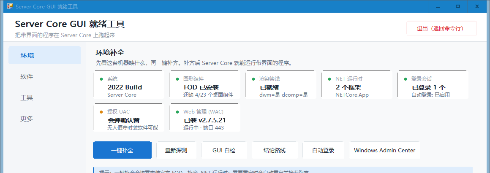
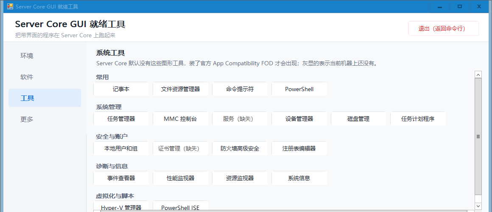

五个页面，一眼看清这台机器缺什么
- 环境：七张状态卡片，覆盖系统版本、图形组件、渲染管线、.NET 运行时、登录会话、UAC、Web 管理
- 软件：添加程序、启动、设置参数、后台常驻、启动诊断
- 工具：21 个系统工具入口，按本机实际有没有自动灰显
- 更多：全部 29 个功能，分八组（一键流程 / 探测与诊断 / 程序档案 / 补给 / 会话与登录 / 使用与工具 / Windows Admin Center / 终端美化）
- 关于：作者、QQ 群与项目地址
补齐图形环境、添加程序、启动排障，全部一键完成。每条结论都来自真机实测。
Gitee（国内推荐，直连更快）
irm https://gitee.com/orangearc655743/server-core-manager/raw/main/install.ps1 | iex
GitHub
irm https://raw.githubusercontent.com/OrangeArtc0915/Server-core-manager/main/install.ps1 | iex
在管理员 PowerShell 里执行。装完在任意目录输入 scm 即可打开图形界面。两条线路装的是同一个包，脚本会自动挑能通的那条。

社区里关于 Server Core 跑图形程序的建议，很多是错的。下面每一条都来自真机验证，并且已经固化进代码。
Server-Gui-Shell 功能就能恢复桌面Install-WindowsFeature 会直接报找不到。--disable-gpu --disable-software-rasterizer 后，实测快 3 倍，CPU 降 85%。图形界面五个页面，29 个功能动作收在「更多」里，不干扰补环境这条主流程。

装官方 App Compatibility FOD 需要重启。工具会记住进度，重启后再打开会接着往下走，不用从头再来。
本地没安装包就自动从官方地址拉取，自动识别经典 MSI 与 v2 两代安装器，装完放行防火墙、设为自启、启动服务，再探测入口是否可达。
按 PE 头判定程序类型，自动带入实测推荐参数。每个档案条目都附上验证过的系统 build 和测试记录，不是拍脑袋写的。
程序起不来时，查事件日志、WER 记录、缺失的 DLL 与运行时，给出处置建议，而不是只丢一个错误码。
密码写入 LSA 机密而不是注册表明文。命令行菜单里可随时开关。
以 zip 方式就地部署运行时，不写注册表、不进控制面板，用完删目录即可。
Nerd Font、oh-my-posh、fastfetch 全部打进发布包，安装不联网；不想要了一键还原（profile、cmd AutoRun、字体、颜色全清）。装好后输入 scm-term 打开终端就是 UTF-8 + Nerd Font + 图标提示符，另带 fastfetch 系统信息面板。
内置 1_shell、atomic、catppuccin_frappe、dracula、emodipt-extend、zash 六个主题，装完在「更多 → 终端美化」里直接切换，不用去网上找配置文件。
cmd 和 PowerShell 的新窗口都会显示「输入 Sconfig 返回服务器菜单 / 输入 scm 打开 GUI 工具」，清屏或新开窗口后重新显示。输出被重定向时保持安静，不会污染脚本抓取的结果。
一键在 explorer、轻量启动器、cmd、sconfig 之间切换。改动前自动导出注册表备份，随时还原。sconfig 这条走一个批处理包装，绕开 Winlogon 不能直接执行 .bat 的限制。
下面这一组在 Hyper-V 上的 Windows Server 2022 Core（build 20348.2700）测得。v1.1.0 的终端美化与登录 Shell 相关结论，另在 Windows Server 2025 Core（build 26100.32230）上复测过。
| 启动参数 | 首窗口耗时 | 内存 | CPU 时间 |
|---|---|---|---|
| 默认 | 18.2 s | 385.9 MB | 30.5 s |
--disable-gpu | 15.1 s | 未记录 | 未记录 |
--disable-gpu --disable-software-rasterizer | 6.0 s | 325.7 MB | 4.6 s |
为什么差这么多
Server Core 没有 GPU 驱动，也没有完整的 DWM 合成，Chromium 的 GPU 进程会反复失败重试，既拖慢启动又抬高 CPU。所以工具给 Electron 类程序默认带上上面这两个参数。
另外两项实测
[OK] 已安装: 版本 2.7.5.21 安装方式 v2 / Inno Setup 6.7.0 [INFO] 服务 WindowsAdminCenter Running 启动=Auto [INFO] 防火墙入站规则: 3 条 [OK] /shell/ 探测: HTTP 302 网关响应正常
两种方式，挑一种。都只需要管理员权限。
Gitee（国内推荐）
irm https://gitee.com/orangearc655743/server-core-manager/raw/main/install.ps1 | iex
GitHub
irm https://raw.githubusercontent.com/OrangeArtc0915/Server-core-manager/main/install.ps1 | iex
装到 C:\Program Files\ServerCoreManager，并安装 scm 一行命令。重复执行等于升级，只覆盖程序文件，不动你已有的程序列表、日志和断点状态。
脚本里的下载顺序是 GitHub Releases → Gitee Releases → GitHub 分支源码打包，前一条不通、或拿到的不是真 zip 就自动换下一条，所以两条线路装的是同一个包。
需要改安装目录或不装 scm 命令时，用环境变量：$env:SCM_DEST、$env:SCM_NO_COMMAND；自建镜像用 $env:SCM_MIRROR_GITHUB、$env:SCM_MIRROR_GITEE。
ServerCoreManager.zip一键运行.bat解压后如果 PowerShell 拒绝执行脚本，是包带了「来自 Internet」标记。在工具目录里跑一次 Get-ChildItem -Recurse *.ps1 | Unblock-File 即可。命令行安装会自动处理这一步。
补齐 FOD 之后，23 个桌面体验专属组件里仍会缺 4 个。这些限制由 Server Core 环境本身决定，不是工具的问题，也不打算含糊过去。
缺 twinui.dll，这类程序起不来。
缺 themeservice.dll 和 themeui.dll，窗口不会应用现代主题。缺 DispBroker.dll 也限制了一部分显示相关能力。
这个工具是在 Server Core 本机补齐图形能力，程序在本机渲染。想让无头机器上的界面通过网络传输画面，属于另一个方向。
只能走软件渲染，所以建议带上禁用 GPU 的参数。这是 Server Core 的客观限制。
从 Windows Update 拉取，体积较大且可能失败。工具内置了常见错误码的中文处置建议，也支持用 FOD ISO 走本地源。
实测：MSIX 包装不上，即使想办法装上也无法在 Server Core 启动。所以工具不提供 Windows 终端相关功能，改为把系统自带的 conhost 美化好（Nerd Font + oh-my-posh + fastfetch）。